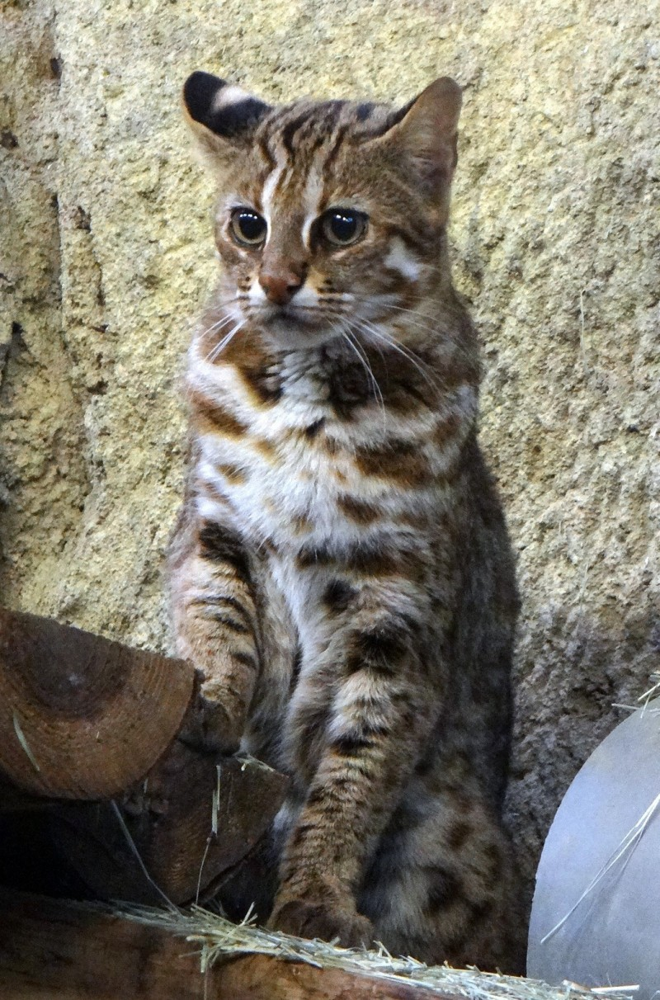
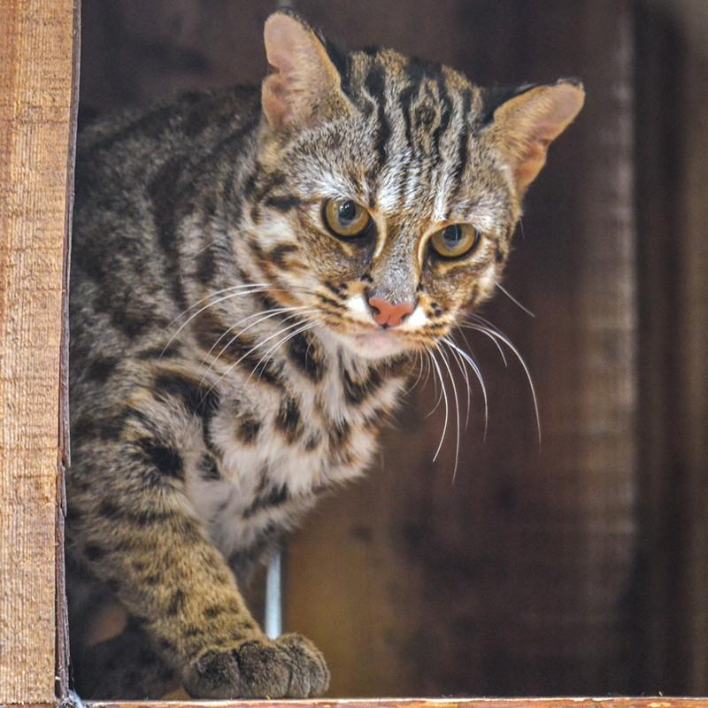
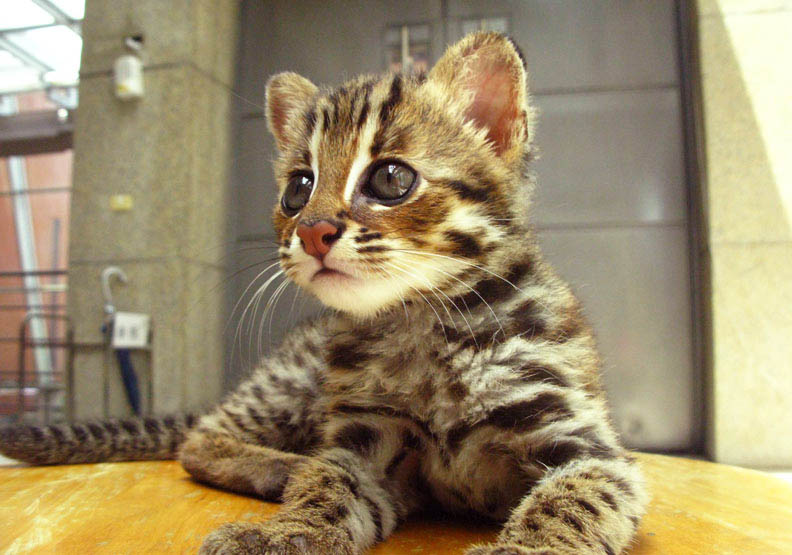
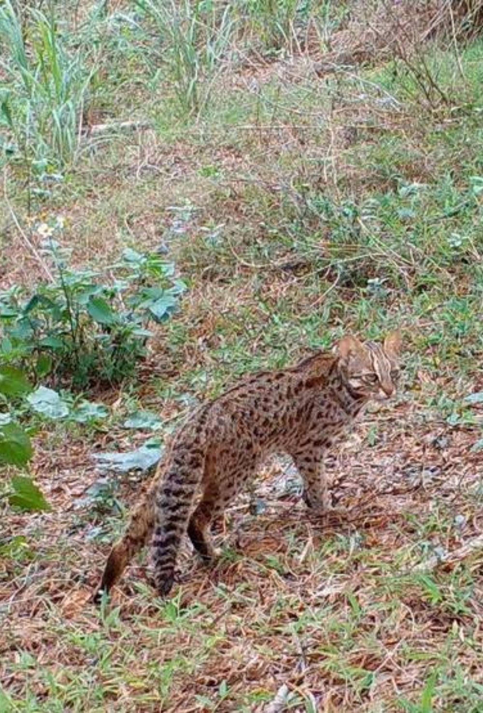
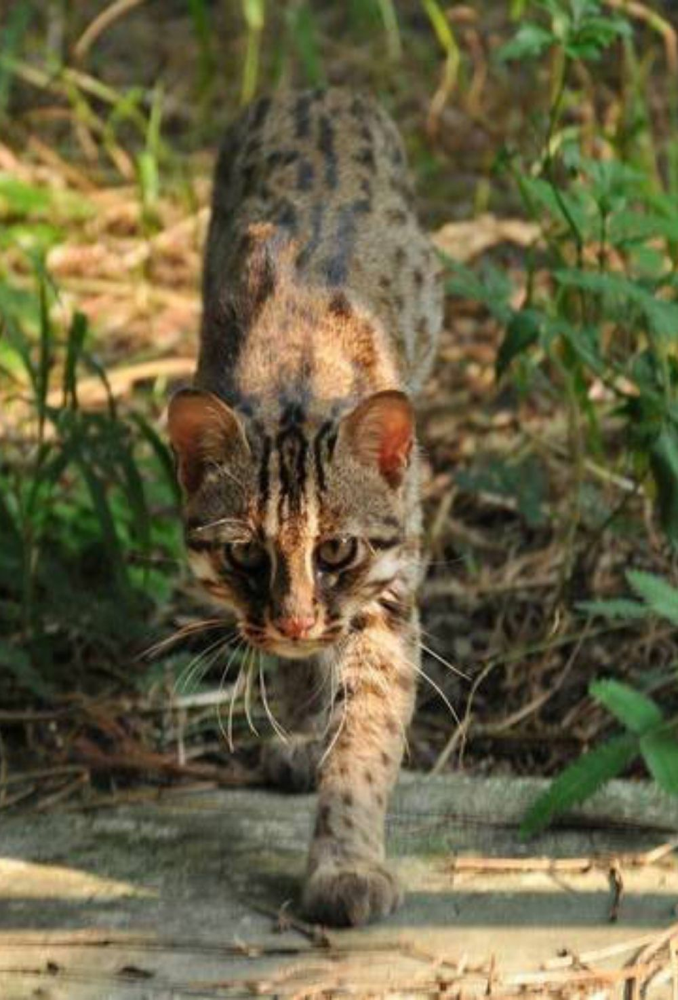
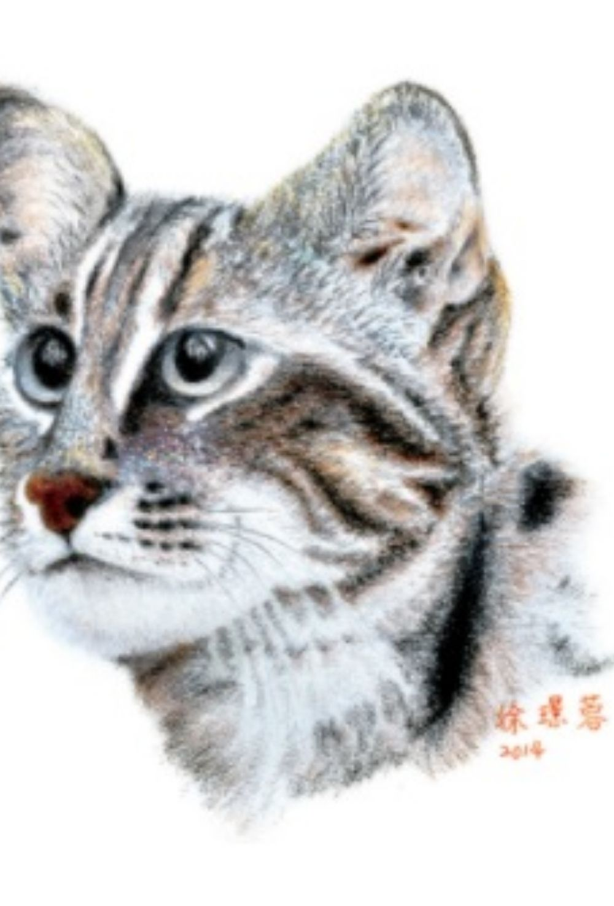
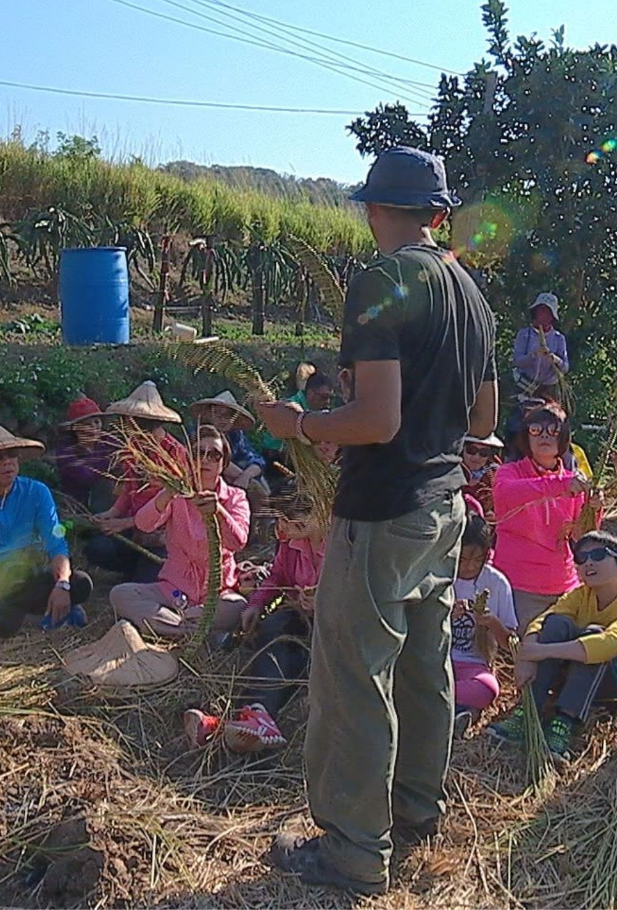

前言
石虎，外型與你、我家中的家貓相仿，主要以其額頭、眼窩內側的白色條紋及耳後明顯的白斑作為辨別特徵。曾在全台淺山區域普遍分布的石虎，棲息環境與人類活動區域大幅重疊，因此導致分布範圍隨著人們大量的開發逐年縮減，目前僅剩臺灣西部部分低海拔山區有零星分布，其中以苗栗、臺中和南投為現存族群較穩定的區域。然而，人類的開發並沒有因為石虎的困境而停止，石虎持續面對著棲地嚴重破碎化及人為干擾的威脅。因此在2008年，原本在「野生動物保育法」中被列為第二級「珍貴稀有保育類動物」的石虎，即被修正為第一級的「瀕臨絕種保育類動物」。

新聞報導

前往報導
苗縣社區及團體投入保育石虎 縣府發220萬獎勵金
苗縣府農業處指出，為保育瀕臨絕種的各類生物，縣府積極爭取林務局經費以推動「瀕危物種及重要棲地生態服務給付計畫」，目前共有23隊社區巡守隊參加棲地巡護、104位農友參加友善農地耕作及47位民眾參加養禽場域入侵自主通報。

前往報導
鳥嘴潭人工湖有石虎定居 專家不推異地補償：創造優質現地
為降低施工過程對石虎的影響，中水局曾與環團、專家現勘及諮詢，並增加13項生態保育對策，包括避免於夜間施工、工區限速、設置動物通道、區內增設生態友善措施、不使用農藥及除草劑、加強烏溪沿岸的野狗熱區管制等。
影片

前往影片
許伯簡芝「500隻石虎的命運」
石虎不由保育員大量繁殖的真正原因!請石虎保育協會顧問來解答!【許伯簡芝】500隻石虎的命運【簡芝聊聊】
狠愛演「一日石虎研究員」
【狠愛演】一日石虎研究員！拍到超驚人畫面『全部人崩潰』

前往影片